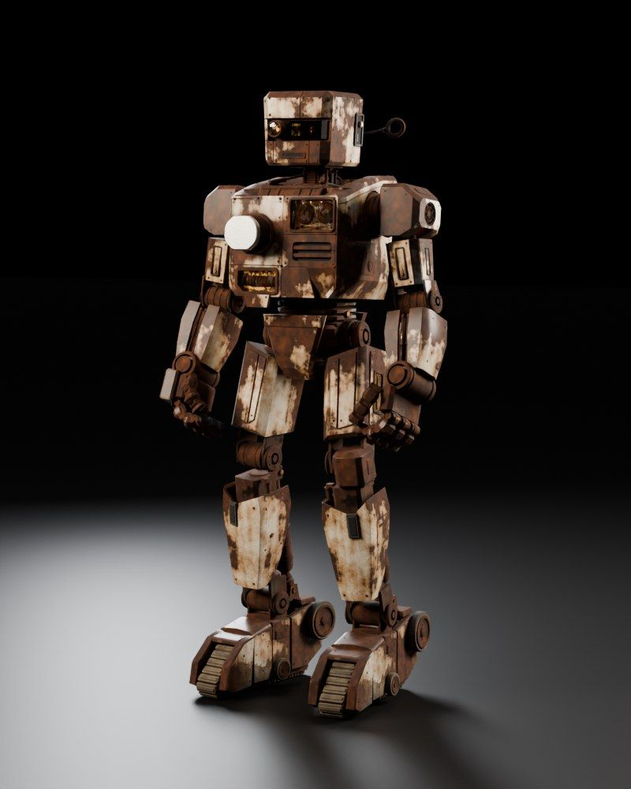

Session 5 · Week 3 · Monday
Many Robbies at Once
Smart pointers, threads, channels, async, tests and serde. By the end, a swarm of Robbies cleans the studio in parallel, and the compiler makes sure none of them trip over each other.
Robbie's rust72% · shedding parts

Session materials
Presentation · 60 minSlides25 slides with runnable code, a few broken on purpose and one that panics on purpose. Arrow keys to move, N for the teacher's speaker notes.
Cheat sheetOne page, all of Session 5Box, Rc, RefCell, threads, channels, Arc and Mutex, tokio, tests and serde on one screen.
Student HandbookMany Robbies at Once HandbookEvery idea from today with runnable examples, memory tricks, an error field guide and 10 practice questions.
Quiz 5 · 15 minMany Robbies at Once Quiz12 questions, pass mark 70%. Your best score is saved in this browser.
Checkpoint 2 · take homeReview of Sessions 4 and 515 questions across traits, iterators, smart pointers and threads. Due before Session 6.
Build it
Lab 5 · in class · 30 minSwarm ModeFive steps, nine tests: five Robbies, five rooms, and five different ways to split the work across threads.
Homework 5 · due Session 6Swarm SimRead a JSON floor plan with serde, send every cleaning bot out on its own thread, and write the report back as JSON. Your own tests count too. Scored out of 10.